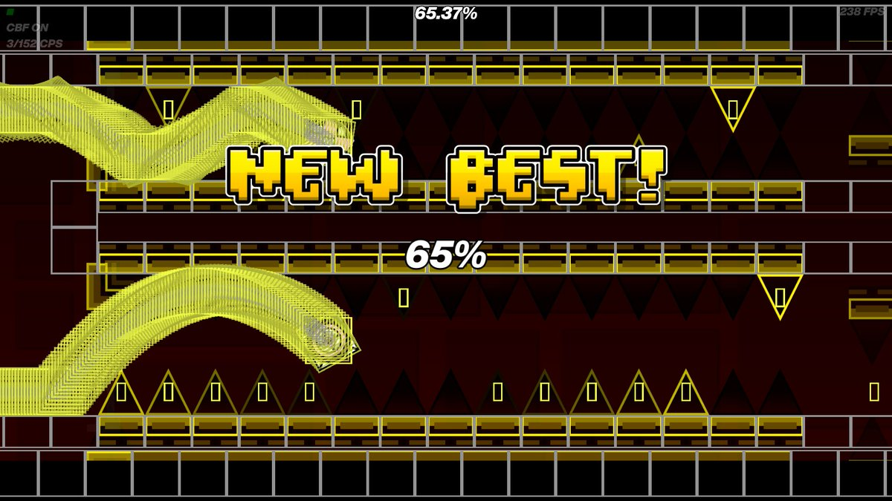

Vision alcança 65% em Unnerfed Silent Clubstep após mais de 1 milhão de tentativas
Conhecido por ser o quinto victor da versão tradicional de Silent Clubstep, jogador continua enfrentando a versão sem os nerfs, acumulando mais de seis anos de dedicação e ultrapassando a marca de um milhão de tentativas.

Vision apresentou um novo progresso em Unnerfed Silent Clubstep, alcançando 65% a partir do início do nível. A conquista foi publicada em um vídeo intitulado "UNNERFED Silent Clubstep 65% [1 MILLION+ ATTEMPTS]".
Na descrição, o jogador revelou ter acumulado 1.090.387 tentativas e destacou que continua tentando superar o desafio mesmo após seis anos de dedicação.
O resultado chama atenção principalmente pela dificuldade histórica do projeto. Silent Clubstep é um dos níveis mais conhecidos da comunidade de Geometry Dash, sendo uma recriação silenciosa de Clubstep, criada por Sailent.
A versão original e as alterações
A versão original de Silent Clubstep ficou conhecida por ser considerada praticamente impossível por muitos jogadores. Entre os principais obstáculos estavam sequências de timings extremamente apertados, trechos de voo muito difíceis e partes que exigiam precisão elevada.
Em 2020, o nível passou por alterações para corrigir problemas relacionados às físicas do jogo e reduzir algumas dificuldades. Entre as mudanças estavam ajustes em timings, correções de hitboxes e melhorias em partes que apresentavam problemas de visibilidade.
A versão modificada foi verificada por paqoe em julho de 2022, após mais de 138 mil tentativas, recebendo posteriormente sua classificação oficial.
Entretanto, em novembro do mesmo ano, Sailent e icedcave disponibilizaram uma versão oficial sem os nerfs, preservando a proposta de dificuldade original e corrigindo problemas que poderiam impedir sua conclusão nas versões mais recentes do jogo.
O que torna o nível tão difícil?
Um dos trechos mais conhecidos de Silent Clubstep é a sequência chamada "8 Jumps of Hell". Ela apresenta oito saltos extremamente precisos, com mudanças de velocidade que dificultam a execução.
Além disso, o nível possui partes de nave com corredores estreitos, sequências de memória e segmentos nos quais a visibilidade é bastante limitada.
A combinação desses elementos faz com que a consistência seja um dos maiores obstáculos para quem tenta completar o projeto.
A trajetória de Vision
Vision já possui uma relação histórica com Silent Clubstep. Em agosto de 2023, ele conseguiu completar a versão tradicional do nível, tornando-se seu quinto victor, após aproximadamente 821 mil tentativas.
Agora, sua dedicação à versão Unnerfed ultrapassa um milhão de tentativas, demonstrando a diferença entre superar a versão modificada e enfrentar novamente a proposta original do projeto.
O novo recorde de 65% representa um avanço importante, mas ainda deixa uma parte considerável do nível pela frente.
Com seis anos de dedicação, Vision continua tentando superar um dos desafios mais conhecidos da história de Geometry Dash.
Wiki.gg — Silent Clubstep
YouTube — Vision